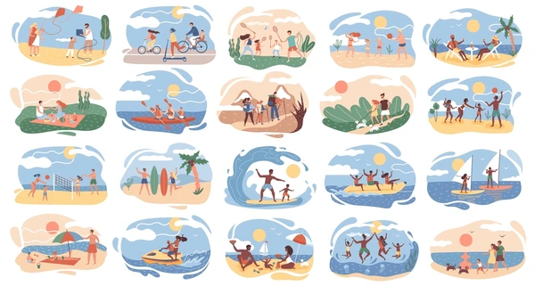

SERVICES
Búsqueda y filtrado de actividades:
Los usuarios pueden buscar actividades por ubicación, tipo de experiencia (arte, cocina, artesanía, etc.), disponibilidad de fechas y otros criterios relevantes.


Comunicación directa con los anfitriones:
Los usuarios pueden comunicarse directamente con los anfitriones de las actividades para hacer preguntas, obtener más información y coordinar detalles adicionales.